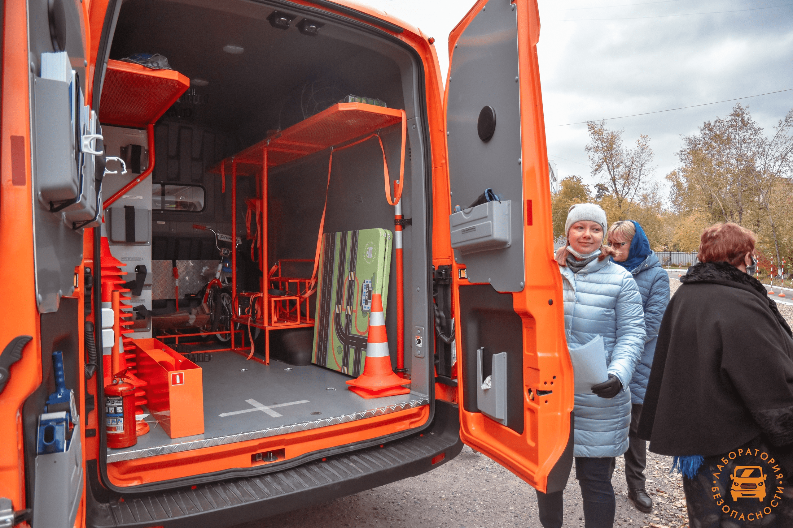
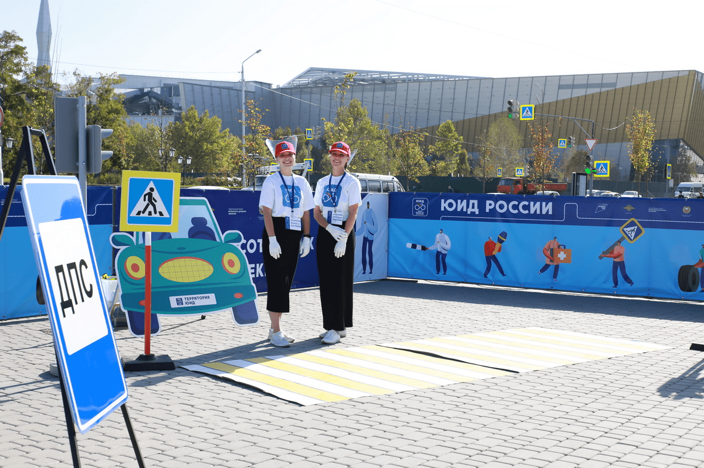

В декабре 2020 года на базе ГУ ДО "Технопарк Забайкальского края" прошло открытие «Лаборатории безопасности». Специализированный автобус выезжает в населённые пункты края для проведения занятий по безопасному поведению на дороге с детьми. Оборудование позволяет моделировать ситуации и обучать поведению на дороге в реальных условиях. Эта методика позволяет достичь высокого уровня эффективности обучения подрастающего поколения. Занятия с детьми проводят подготовленные педагоги.
Подробнее... ЮИД существует в России с 1973 года и включает уже более 400 000 участников в возрасте от 8 до 16 лет, объединенных в 30 000 отрядов в каждом из 85 субъектов Российской Федерации. Проект «Организация работы по привитию детям навыков безопасного участия в дорожном движении и вовлечению их в деятельность отрядов юных инспекторов движения» направлен на решение задач Федерального проекта «Безопасность дорожного движения» в рамках Национального проекта «Безопасные качественные дороги».
Подробнее... 